陳亭妃chen_tingfei
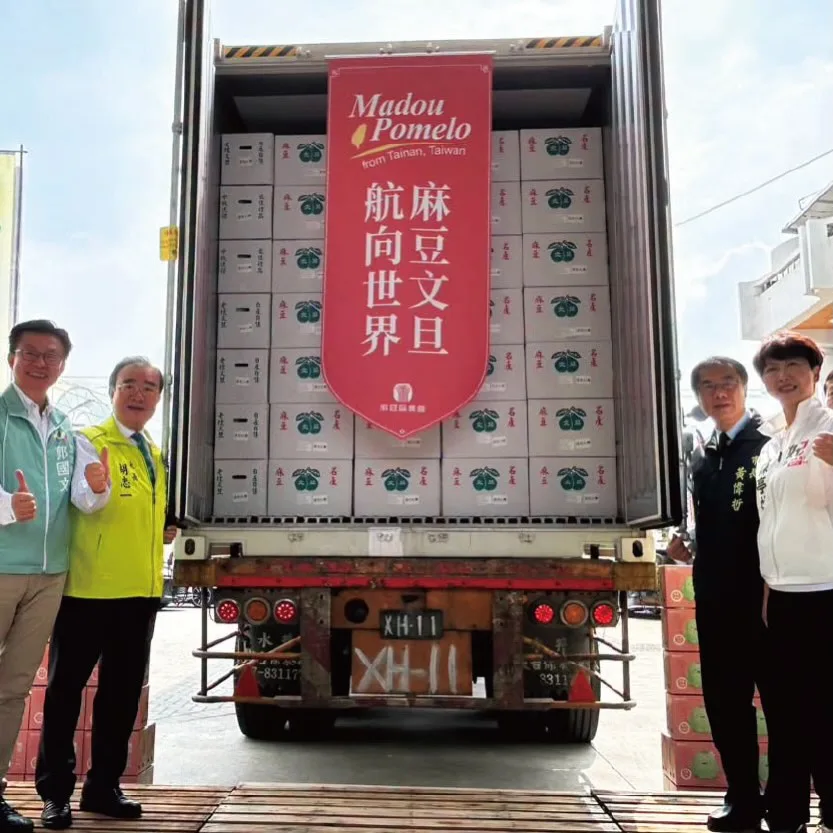
🍊 【再接再厲，柚來一櫃！麻豆文旦今天第三櫃航向加拿大✈️🇨🇦】 最道地、最甘甜的台南麻豆文旦，今天外銷加拿大的第三櫃正式裝櫃啟航囉！ 感謝所有的農友夥伴與辛勤付出的工作人員，因為大家的堅持與努力，才能把我們優質的台灣農產品推向國際舞台，讓海外的僑胞與國外朋友都能品嚐到這份來自台南的甜蜜滋味！ 亭妃會持續爭取資源、全力挺農民，作大家最強的後盾，讓台灣美味繼續在全世界發光發熱！ 💪✨
Posts

🍊 【再接再厲，柚來一櫃！麻豆文旦今天第三櫃航向加拿大✈️🇨🇦】 最道地、最甘甜的台南麻豆文旦，今天外銷加拿大的第三櫃正式裝櫃啟航囉！ 感謝所有的農友夥伴與辛勤付出的工作人員，因為大家的堅持與努力，才能把我們優質的台灣農產品推向國際舞台，讓海外的僑胞與國外朋友都能品嚐到這份來自台南的甜蜜滋味！ 亭妃會持續爭取資源、全力挺農民，作大家最強的後盾，讓台灣美味繼續在全世界發光發熱！ 💪✨

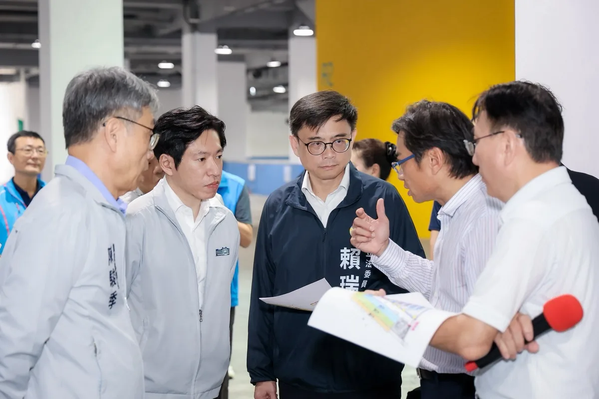
前鎮漁港需要務實對策，不需要「先唱衰、再收割」！ 前鎮漁港是世界級的遠洋漁港，漁獲佔全台九成，前鎮漁港的發展與漁民權益，是我長期關心推動，五大建設81億爭取到位，許多細項也多次召開協調會處理，攤商與船員關切的事項，中央、地方早處理拍板定案。 9月17日，我陪同行政院秘書長 張惇涵 Chang Tun-Han 、農業部長陳駿季實地視察，並與陳其邁市長共同討論，漁業署確定公布「兩年試營運計畫」： ✅ 運銷中心攤商兩年免費進駐，依衛生標準與使用需求調整動線、降溫及攤位設備。 ✅ 船員住宿費再爭取降至100元，餘額協調由船東負擔，外籍漁工等同免費入住。 ✅ 改善船員大樓供水、異味、隔音，持續爭取增加接駁公車班次，回應實際需求。 今年度預算藍白主提凍結「漁業發展」預算1000萬元、凍結「漁業管理」預算2000萬元，民眾黨團也凍結7581萬的漁業相關預算。相關言行漁民及高雄市民都看在眼裡。 「高雄城市轉型沒有退路」，前鎮漁港啟用超過50年，才好不容易爭取到81億元經費翻新整建，追求的是遠洋漁業升級的寶貴機會。高雄需要的是能夠解決問題的市長，讓城市持續升級的市長，我會持續盯緊改善進度，讓攤商安心做生意、船員安心休息，回應所有漁民的期待。
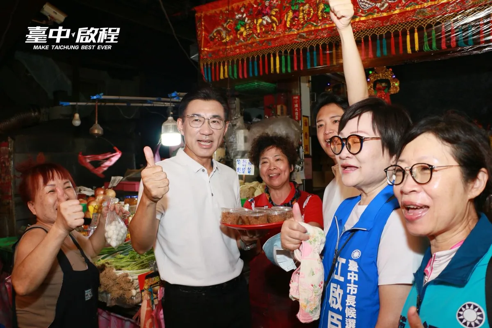
中秋前夕，來 #向上市場 向大家問好！ 今天啟臣與羅廷瑋委員及公益里劉興峰里長，一起向攤商與採買的鄉親送上祝福。感謝自治會廣播歡迎，還有攤商送上米糕，祝福 #步步高升，滿滿的人情味，讓我倍感溫暖！ 傳統市場是日常採買的好地方，更承載著臺中的人情味。啟臣要推動 #市場改造，改善動線、通風採光與環境衛生，讓頭家好做生意、鄉親買得舒適安心。祝大家中秋團圓、平安順心！ #臺中升級 #幸福加給 #臺中人情味 #臺中味 #taichungway
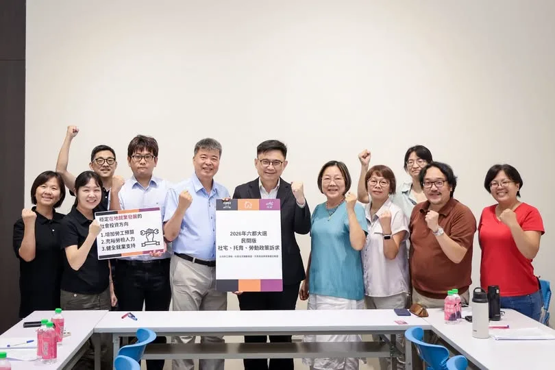
🏠社宅、托育、勞動，環環相扣，打造安居宜居高雄 謝謝OURs專業者都市改革組織彭揚凱秘書長；社會住宅推動聯盟孫一信召集人、林育如主任；台灣勞工陣線楊書瑋秘書長、洪敬舒研究部主任；托育及就業政策催生聯盟楊秀彥代表，以及伊甸基金會張靜薇副執行長、曾雅鈴區長、林灯偉主任來訪，就社宅、托育、勞動政策提出具體訴求並交換意見。 住宅、托育、勞動，環環相扣。年輕人負擔得起住宅能安心成家；完善公共托育能放心生養；勞動環境受保障能專注工作。這三件事，是撐起一座城市宜居、安居最重要的基礎。 社宅方面，我會接續 陳其邁 Chen Chi-Mai 市長的基礎，優先盤點可用土地，增加地方自辦社宅量能；托育方面朝「一國小學區一公托」邁進，以推動社宅附設公托為目標；勞動政策關注勞退新制、雇主提撥率調升、勞檢人力與最低工資裁罰基準等議題持續推動落實。 我在勞工家庭成長，明白市民朋友的壓力與需求。感謝各團體研議倡議，督促政府施政，我會滾動檢討施政方向，讓政策符合市民的期待。

這兩天，我走進 #大梨山地區，接連來到梨山天龍宮、松茂天松宮、環山環清宮、佳陽碧雲宮參拜，也和在地鄉親坐下來暢談未來的 #市政願景。從交通、農業，到醫療與長者照顧，大家關心的每一件事，都和山城的日常生活緊緊相連。 這些年，我不僅持續爭取 #中橫復建，未來也希望把AI帶進農業，讓病蟲害辨識、防災預警更即時；把遠距醫療、智慧衛生所和緊急送藥帶進山城；再串聯福壽山、武陵的觀光資源與原民文化，讓大梨山的好，被更多人看見！ 說明會上，有農民特別和我分享對 #農產行銷、#通路拓展 的期待，也有鄉親表達支持與鼓勵。這些話，啟臣都謹記在心！ 不僅要改善梨山交通建設，更要讓大梨山和整個臺中一起升級！讓住在山上的人，也能擁有更便利、更安心的生活。 #臺中升級 #幸福加給

昨天來到 #梓官大壽宮 廟口開講，看到這麼多鄉親到場，也和方信淵-高雄市議員、宋立彬 高雄市議員、陸淑美三位議員及黃韻涵 議員候選人一同討論梓官的未來。 梓官真的很美。許多人來到高雄，第一站常常就是到蚵仔寮吃海產。很多人說高雄最美的是西子灣，但在我眼裡，梓官的海線一樣有自己的魅力，只是這麼美的地方，不能只有一個蚵仔寮，觀光、交通、漁業，都還有很大的發展空間。 而最不能迴避的，就是治水。 上個月到典寶里勘災，看到淹水情況，也聽到鄉親說：「30年來都這樣。」箱涵、排水系統老舊等問題，地方早就知道，真正需要的是政府把資源用在最需要的地方。 高雄要進步，不能只有看得到科技產業，也要讓孩子願意留下來、讓薪水提高、讓環境更好，讓每一個地方都能分享到城市發展的成果。 所以我提出四個方向：薪水漲起來、人要留下來、環境好起來、高雄拚世界。 我希望十年、二十年後，大家回頭看2026年的選擇，會發現梓官真的變得更好，孩子留下來了，長輩生活得更有尊嚴，這片美麗的海線也被更多人看見。 這是我對高雄、也是對梓官最深的期待。 #高雄 #梓官 #廟口開講

#新莊隊 大團結！四席力拚全壘打！ 今天和吳秉叡委員，鍾宏仁議員，以及新莊隊的翁震州、林秉宥、陳岱吟、吳奕萱四位議員及候選人團結在一起，大家也來到 #宏泰市場 掃街，除了展現新莊隊的氣勢，也和鄉親報告我們的成績和對新莊的願景。 未來，我要和新莊隊一起推動 #國影中心 升級，打造集結金曲、金馬、金鐘的「 #三金博物館」；更要串聯新莊廟街、新莊體育館、中港大排及宏匯廣場，整合文化、運動、休閒與商圈，打造「 #觀光十字廊帶」，讓更多人走進新莊、認識新莊，帶動人潮與地方發展，也讓新莊人以自己的家鄉為榮！ 我也向大家預告，「北新莊聯合競選總部」即將正式成立，歡迎大家一起來相挺，為新莊隊加油！ 📍北新莊聯合競選總部成立大會 日期：10/9（五）15:00開始入場 地點：新莊體育館前廣場（中華路與公園路口）
把台灣帶向世界，把世界帶進高雄！ 今晚參加「 #世界台灣商會聯合總會年會立法院晚宴 」，與來自全球各地的#台商 相聚一堂，也很高興 韓國瑜 院長南下 #高雄 同場交流，共同向長年在海外為台灣打拚的台商朋友表達敬意。 台商是 #台灣 真正的「日不落力量」，從亞洲、美洲到歐洲、大洋洲，只要太陽升起的地方，就有台商努力奮鬥的身影。大家憑藉勇氣與實力，在世界各地開創事業，也讓世界看見台灣的韌性與價值。 今年世界台商總會年會在高雄舉辦，別具意義。高雄因港而生、向海而行，有山、有海、有港、有河，更有一群認真打拚的高雄人，這座城市擁有厚實的產業基礎，也具備連結世界的潛力。 許多台商當年帶著 #一卡皮箱 走向世界，而我也是帶著一卡皮箱來到高雄，選擇留下來、扎根高雄。或許我們走過不同的人生道路，但彼此之間有著共通的語言，那就是「勇敢，是我們共同的名字」！ 期盼未來能有更多機會與大家攜手，讓台商的遠見與資源注入高雄，我們一起投資未來、建設高雄！

各行各業一起努力，把高雄照顧得更好！ 經貿文教各界夥伴齊聚一堂，從幼教、兒照、補教、家長團體，到美容業與各界社團，大家雖來自不同領域，卻有共同心願，就是讓高雄的下一代過得更好，也讓產業有更好的發展。 謝謝劉秀鳳總會長號召成立後援總會，也謝謝各區會長帶領各行各業夥伴響應。各位都是第一線工作者，最了解家長的需要，也最清楚產業面對的問題。 孩子的成長不能等，產業發展也不能停。 未來，我會朝「一國小學區一公托」努力，增加公共托育據點、改善托育人員待遇；生育補助加碼到每胎5萬元，成立高雄育兒基金，擴大產後到宅照顧，推動每年60小時延托，讓雙薪家庭多一份支持。 對美容業的夥伴，我會透過「女力新未來」支持女性重返職場、友善創業與職訓；面對產業轉型，則以「傳產支撐科技、科技加值傳產」為主軸，讓不同產業都能找到新的發展機會。 選戰倒數67天，有越來越多不同領域的夥伴加入高雄隊，匯聚每一分力量，為高雄下一個十年努力。11月28日，市長當選、議員過半，一起為高雄拚未來！ 高雄小金剛許智傑 邱俊憲 高雄市議員 何權峰 高雄市議員 陳慧文 高雄市議員 湯詠瑜 詠瑜新選擇 高雄市議員郭建盟 黃文志 高雄市議員 江瑞鴻 高雄市議員 林智鴻 高雄市議員 張漢忠 高雄市議員 #鳳山絕配鄧巧配 洪村銘 大寮林園要改變 黃敬雅 Huang Ching-Ya 吳昱鋒-科技先鋒 理想青年 張以理 蘇致榮 鳳山阿榮 服務團隊
臺中是一座多元的城市，不同語言、文化與生活經驗在這裡交會，也帶來更多與世界連結的可能。 對此，我提出四項 #臺中新家鄉 政策： ✨成立「國際合作發展委員會」 整合跨國經貿合作與生活服務，建立完整的一站式窗口。 ✨啟動「新住民二代國際領航計畫」 透過培力及實務活動，促成臺中與新住民母國間更多雙向交流與合作。 ✨新住民微型創業貸款利息補貼 在既有創業培力課程基礎上，進一步提供貸款利息補貼。 ✨升級母語、法律與心理諮詢服務 強化現有新住民一站式服務，導入多語系專業律師及心理諮商資源。 從國際交流、二代培力，到創業與生活支持，讓不同文化在臺中彼此交流，也讓城市與世界建立更多連結。 #臺中啟程 #打造旗艦城 #臺中升級 #幸福加給 #新住民
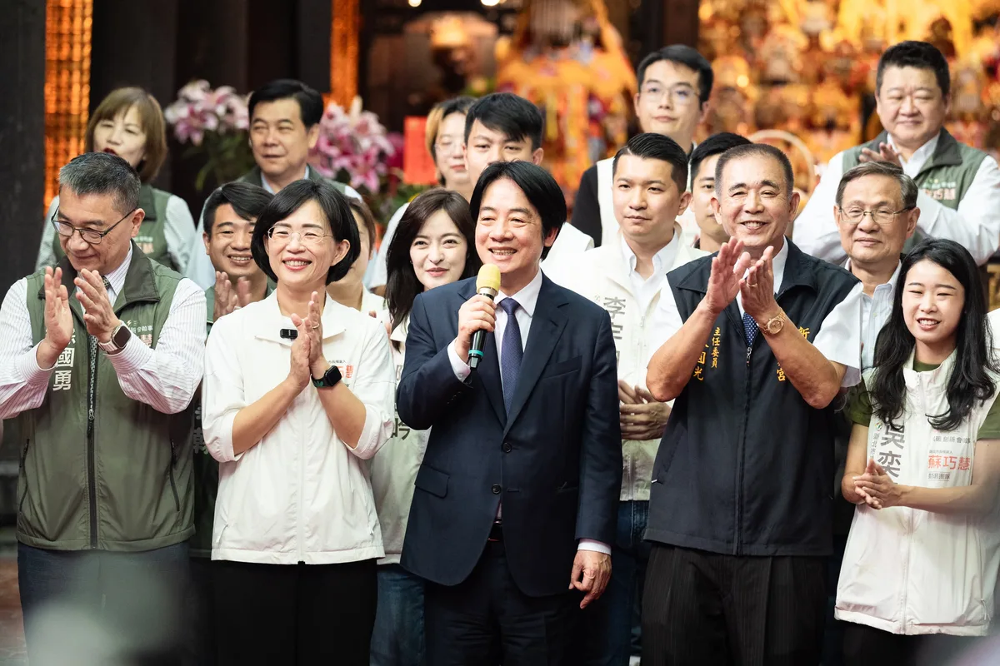
@su.chiaohui:恭祝新莊慈祐宮建廟340週年！感謝 @william_chingte 總統親自贈匾祝福！ 賴清德總統今天親自來我們新莊慈祐宮贈送「霖雨溥化」賀匾，感謝新莊慈祐宮長年庇佑地方，我們也一同參香祈福，誠心祈求國泰民安、風調雨順。 新莊不只有豐厚的人文、信仰和文化底蘊，更有 #國家電影中心，未來有機會成為聚集「金鐘、金曲、金馬」的 三金博物館。 今天也感謝數百位台南鄉親一起為我加油，未來我們要串聯新北、台南的半導體與AI產業，並結合新北的山海資源與台南的歷史文化，深化觀光合作，讓兩座城市一起升級！
恭祝 #新莊慈祐宮 建廟340週年！感謝 @william_chingte 總統親自贈匾祝福！ 賴清德總統今天親自來我們新莊慈祐宮贈送 #霖雨溥化 賀匾，感謝新莊慈祐宮長年庇佑地方，我們也一同參香祈福，誠心祈求國泰民安、風調雨順。 新莊不只有豐厚的人文、信仰和文化底蘊，更有 #國家電影中心，未來有機會成為聚集「金鐘、金曲、金馬」的 #三金博物館。 今天也感謝數百位台南鄉親一起為我加油，未來我們要串聯新北、台南的半導體與AI產業，並結合新北的山海資源與台南的歷史文化，深化觀光合作，讓兩座城市一起升級！ 感謝賴總統今天親自來為新北隊加油打氣，未來我也期盼有機會帶領新北隊，不只讓新莊的文化故事被更多人認識，也要吸引更多人來到新北，看見這裡的多元和美好。
🌕中秋節前夕相聚，攜手做高雄堅強後盾 中秋佳節將屆，在這團圓、感恩的時刻，與市民朋友相聚，深深感受到高雄這座城市的溫暖和凝聚力，大家在各自的崗位上，為高雄的進步默默付出。 「由服務驅動、以價值觀團結」，是國際獅子會的核心精神。感謝300E-5區五福獅子會吳信霈會長相邀，獅友們長期扎根服務，是社會安定的重要力量。 而說到撐起高雄發展，必定有我廣大勞工兄弟姐妹。 在高雄市總工會秋節餐敘上，我向林明章理事長以及在座所有兄弟姐妹表達敬意。勞工是高雄經濟轉型的基石，我會持續爭取提升勞工權益，讓大家有更安全、更有保障的就業環境。 信仰，是支持我們大步向前的力量。 來到前鎮慈德宮參加金府千歲聖誕平安宴，感謝林金藝主委三十多年來的用心護持。前鎮這幾年的蛻變有目共睹，從81億元的前鎮漁港大改造，到亞灣區智慧公宅、黃線捷運的推動。我會接棒延續這些重大建設，讓前鎮的風華再次展現。 來到小港大坪頂無極主公殿參加平安宴，感謝梁敬德主委的用心，一同向廣澤尊王祈求國泰民安。小港是高雄的南大門，我會全力督促捷運小港林園線、國道七號貨櫃專用道如期完工，改善沿海路的交通安全，給小港居民一個更安全、更進步的生活環境。 從民間社團、勞工體系到基層宮廟，每一股力量都是推動高雄向前的關鍵，我會帶著這份感恩的心，把大家的期盼化為具體的施政成績，我們一起打拚，讓高雄成為更宜居、更繁榮的偉大城市！ 敬祝中秋佳節愉快、闔家平安！ 高雄小金剛許智傑 林岱樺 黃彥毓 前鎮小港 我願意 黃文益 高雄市議員 市議員李順進 尹立 左營楠梓市議員參選人 吳昱鋒-科技先鋒 李雅慧 高雄市議員 服務團隊 鄭光峰 高雄市議員 服務團隊 陳致中 Chih-Chung Chen 服務團隊

桃園是國門之都，有山有海，有鄉村也有都會，我們是全國工業產值第一的城市，產業鏈完整多元。這裡有引領世界潮流的AI、科技、電腦產業，也有傳統的汽車、機械、食品產業。百工百業在桃園，都有蓬勃發展的機會。 感謝民進黨主席賴清德總統 @william_chingte ，今天移師桃園舉辦行動中常會，我要向大家報告，我的家鄉桃園擁有獨一無二的優勢，更匯聚了大家對未來的無限期待。升格直轄市以來，我們的人口增加超過30萬。 然而，隨著人口迅速成長，建設的速度，卻明顯跟不上城市發展的腳步。 這段時間，我走遍桃園各區，聽見市民對於改變現狀的渴望，也看見這座城市的各種可能，以及被壓抑的巨大潛能。 我深知，現在的桃園正站在關鍵十字路口。市長作為市政發動機、民意接收站，需要「心在桃園、根在桃園」，唯有真正了解地方需求的人，才能帶領這座城市向前。 從產業升級、交通改善、醫療平權，到青年支持、藝文發展與運動環境，針對桃園此刻的各項不足，我已經準備好全方位的具體解方，要用扎實的政策，驅動這座城市大步向前！ 手上這一票，決定了接下來四年，桃園要向世界訴說什麼樣的故事。 我是在地子弟黃世杰，我受這片土地栽培，我的心在桃園，成家立業也在桃園，桃園是我的家鄉，是我實踐夢想的地方。 我有決心、更有行動力，我們要匯聚最大的力量，把過去三年多的停滯，化作未來三十年的爆發力。讓真正準備好的市長，帶領桃園迎向光榮、走向世界、奔向未來！ 11/28懇請支持黃世杰，支持桃園隊全壘打！ 一起找回令人動心的城市，讓心桃園動起來💖
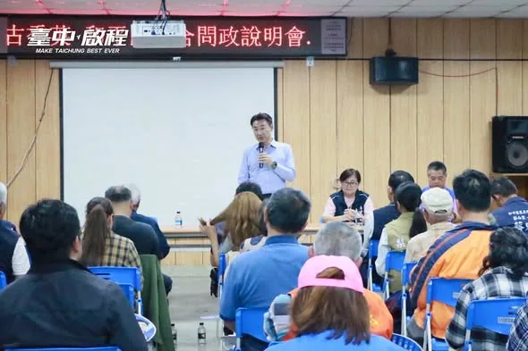
這兩天，我走進 #大梨山地區，接連來到梨山天龍宮、松茂天松宮、環山環清宮、佳陽碧雲宮參拜，也和在地鄉親坐下來暢談未來的 #市政願景。從交通、農業，到醫療與長者照顧，大家關心的每一件事，都和山城的日常生活緊緊相連。 這些年，我不僅持續爭取 #中橫復建，未來也希望把AI帶進農業，讓病蟲害辨識、防災預警更即時；把遠距醫療、智慧衛生所和緊急送藥帶進山城；再串聯福壽山、武陵的觀光資源與原民文化，讓大梨山的好，被更多人看見！ 說明會上，有農民特別和我分享對 #農產行銷、#通路拓展 的期待，也有鄉親表達支持與鼓勵。這些話，啟臣都謹記在心！ 不僅要改善梨山交通建設，更要讓大梨山和整個臺中一起升級！讓住在山上的人，也能擁有更便利、更安心的生活。 #臺中升級 #幸福加給
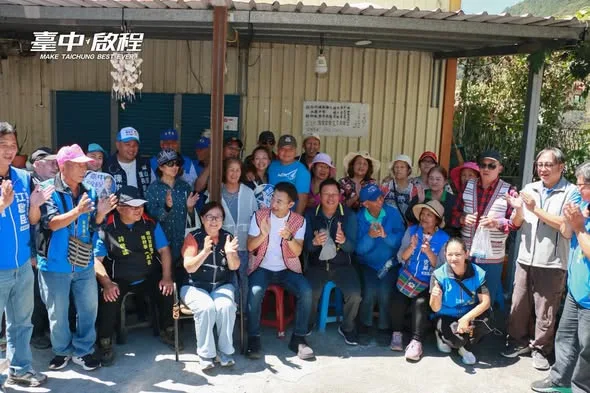
今天來到 #和平區環山部落，受到族人朋友熱情歡迎。部落耆老依照泰雅族傳統，親自為我披上戰袍，現場族人也唱起「當選歌」，看到大家這麼熱情，我也更感受到族人對未來的期待與託付。 臺中有超過4.3萬名原住民族朋友，但只有約一成居住在和平區。很多族人生活在豐原、潭子、北屯、太平等地，因此我認為，原民照顧不能只留在原鄉，更要走進大家生活的每一個地方。 對此，我提出五項原住民族政策： ✨升級職業培力，強化就業競爭力 ✨加碼原民微型保險，由市府全額負擔15至64歲族人保費 ✨打造行動長照車，把醫療檢測與照顧帶進部落 ✨鼓勵原鄉外設置原民據點，提供展演、交流及青年創業空間 ✨建構原民語言與祭儀智慧庫，透過科技延續文化傳承 現場也有族人關心醫療、長照、交通、青年發展與文化傳承。我會把這些聲音帶回市政規劃，讓資源真正走到需要的地方！ #臺中升級 #幸福加給 #原力覺醒 #臺中即原鄉
#新莊隊 大團結！四席力拚全壘打！ 今天和 吳秉叡 委員，鍾宏仁議員，以及新莊隊的 翁震州、林秉宥、陳岱吟 帶你贏、吳奕萱 新莊新萱言 四位議員及候選人團結在一起，大家也來到 #宏泰市場 掃街，除了展現新莊隊的氣勢，也和鄉親報告我們的成績和對新莊的願景。 未來，我要和新莊隊一起推動 #國影中心 升級，打造集結金曲、金馬、金鐘的「 #三金博物館」；更要串聯新莊廟街、新莊體育館、中港大排及宏匯廣場，整合文化、運動、休閒與商圈，打造「 #觀光十字廊帶」，讓更多人走進新莊、認識新莊，帶動人潮與地方發展，也讓新莊人以自己的家鄉為榮！ 我也向大家預告，「北新莊聯合競選總部」即將正式成立，歡迎大家一起來相挺，為新莊隊加油！ 📍北新莊聯合競選總部成立大會 日期：10/9（五）15:00開始入場 地點：新莊體育館前廣場（中華路與公園路口）
10/2，歡迎來跟我聊聊台南的未來！ 台南400年，城市正在往下一個階段前進。 而我最在意—年輕人，能不能在台南看見自己的未來？ 從產業發展、農漁業、文化觀光，到青年最關心的工作、創業、租屋與生活，這些都是城市未來不可缺少的一塊。 10/2（五）晚上，我會到「熬民主」，和大家面對面聊聊我對台南未來的想像，也聽聽青年朋友對這座城市的期待。 台南的下一步，不只是城市怎麼發展， 更是我們要一起決定—想要生活在什麼樣的台南。 📍 SASADRA Cafe 台南市東區成大里東寧路西段5號 🗓 10/2（五）18:30－20:00 👉 歡迎到FB留言處，點選連結填寫報名表單！ #陳亭妃 #台南400 #青年 #台南未來 #熬民主
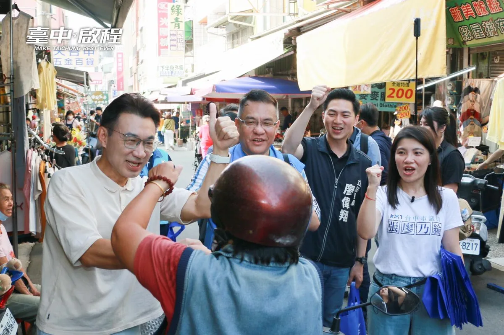
大清早的 #西屯市場，真的太熱情了！ 謝謝西屯的市民朋友！ 走進市場沒兩步就被大家的溫暖加油聲包圍，還有攤商大哥連手上的菜都還沒放下，就笑著跑過來要合照。 讓我「足甘心」的是有位大姐在路旁，默默等候很久時間，才擠過人群握著我的手說「我在這裡等你、看你一眼，一定要當選喔！」大家毫無保留的信任，啟臣全部放在心中！ 西屯未來要 #接軌國際、迎來 #臺中國際會展中心 的繁榮，但對啟臣來說，大家每天買菜的日常生活過得舒不舒服，一樣重要。 市場裡有最珍貴的人情味，但天氣熱時真的悶。未來市場的通風溫路跟環境硬體環境，啟臣一定全力推動升級，讓大家採買更輕鬆、攤商做生意也不用再汗流浹背。 謝謝今天給我滿滿能量的西屯鄉親，我們繼續一起拚！ #臺中升級 #幸福加給

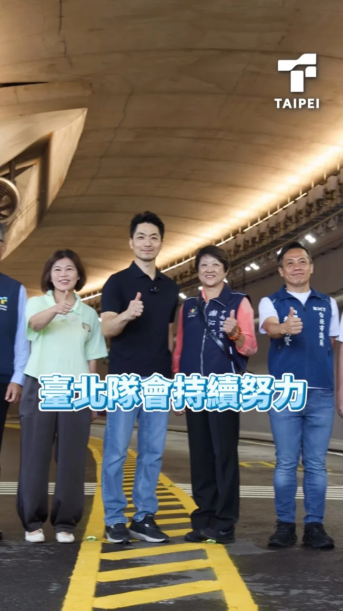
南港生技隧道 9/28即將通車！ 這不只是一條隧道，更是為城市交通問題提出的解方。 過去，從南港車站到國家生技研究園區，上下班尖峰時段經常壅塞。 9月28日，隨著南港生技隧道、生技路正式通車，原本尖峰需花費15-20分鐘的路程，未來只需要5分鐘就能抵達！ 為了落實「人本交通」，我們更全國首創在隧道內規劃寬達4公尺獨立的行人與自行車空間，與車流分隔，讓市民不論騎自行車或步行，都能更加安全、舒適。 災害來臨時，南港生技隧道能作為替代道路，支援緊急救災、救護需求，在改善日常交通的同時，進一步提升城市韌性。 南港生技隧道通車後，不只解決居民面對的交通問題，也將在地生活圈、產業園區與南港車站完整串接，讓南港的交通路網更加便利、完善。 臺北隊會持續推動有感建設，解決市民遇到的問題。 把市政做好，是我們始終堅持走的路。
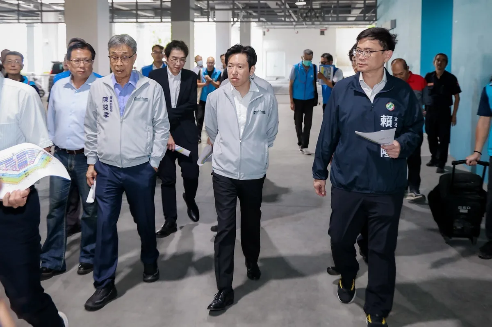
@zenolai:前鎮漁港需要務實對策，不需要「先唱衰、再收割」！ 前鎮漁港是世界級的遠洋漁港，漁獲佔全台九成，前鎮漁港的發展與漁民權益，是我長期關心推動，五大建設81億爭取到位，許多細項也多次召開協調會處理，攤商與船員關切的事項，中央、地方早處理拍板定案。 9月17日，我陪同行政院秘書長@changtunhan 、農業部長陳駿季實地視察，並與陳其邁市長共同討論，漁業署確定公布「兩年試營運計畫」： ✅ 運銷中心攤商兩年免費進駐，依衛生標準與使用需求調整動線、降溫及攤位設備。 ✅ 船員住宿費再爭取降至100元，餘額協調由船東負擔，外籍漁工等同免費入住。 ✅ 改善船員大樓供水、異味、隔音，持續爭取增加接駁公車班次，回應實際需求。 今年度預算藍白主提凍結「漁業發展」預算1000萬元、凍結「漁業管理」預算2000萬元，民眾黨團也凍結7581萬的漁業相關預算。相關言行漁民及高雄市民都看在眼裡。

臺中的未來，在孩子身上！🤝 啟臣正式發表「孩子為本，專業為榮」#六大教育優先方針，從教師減壓、教學權益、軟硬體設備等，全面升級臺中教育環境！ 在校園安全上，市府應每年主動編列10億專款翻修老舊校舍與廁所，不再苦等中央補助；為了把時間還給學生，我們將首創校園行政AI系統，有效減輕教師的公文負擔，落實AI減壓。 此外，科學與技職教育必須向下扎根，我們不僅要推展「生生玩AI機器人」與建置跨學門STEAM示範據點，更要設立技職專責單位深化產學鏈結，將臺中打造成為「機器人製造之都」。 在接軌國際與友善育兒方面，未來將推動「雙語教學Plus」邁向校校有外師，讓孩子扎根在地文化並自信走向世界；同時由市長親自召集成立婦幼發展委員會，進一步優化托育環境並落實幼教平權。 投資教育就是投資臺中！啟臣會做學校與家長最堅實的後盾，為我們的下一代、為臺中的未來拚出競爭力！ #臺中啟程 #打造旗艦城 #孩子為本 #專業為榮
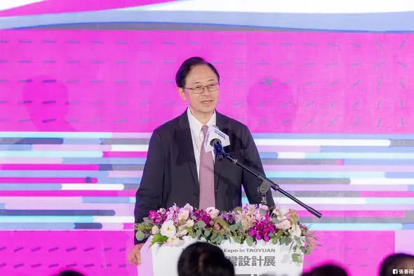
當城市不斷蛻變，我們更要把設計融入城市發展，讓桃園展現更多可能 作為國門之都，桃園近年來發展快速，新的建設、新的產業不斷出現，人流、物流、產業與文化在這裡不斷交會，形塑出桃園獨有的風貌。 擔任市長以來，看著桃園不斷變化，我常常體會到，除了把建設做好，更要把美學放進桃園未來的規劃中，讓設計成為城市發展的一部分。 籌備超過兩年的 #2026台灣設計展，今年以 #桃園流 為主題，從桃園多元的文化、科技創新與產業出發，透過設計重新觀察這座城市，思考設計如何回應城市發展與生活需求。 本次設計展集結國內外眾多設計師、企業與專業團隊，除了多元主題展覽，也安排講座、遊程、戶外光影展演等內容，透過多元形式，讓設計進桃園的每個角落。 我要特別感謝中央，包括經濟部、台灣設計研究院 TDRI等單位的支持，促成 #2026台灣設計展在桃園，讓我們有機會把桃園豐沛的設計元素與能量，呈現給全台乃至於全世界的朋友。 18天的展期，歡迎大家來桃園走走、看看，透過設計，感受這座城市正在發生的改變。 ｜展出日期｜2026年9月24日－10月11日 ｜展出時間｜週一至週四 10:00－18:00；週五至週日、國定假日 10:00－20:00 ｜展出地點｜桃園會展中心、中原文創園區、市立圖書館青埔智慧科技分館，及各衛星展區
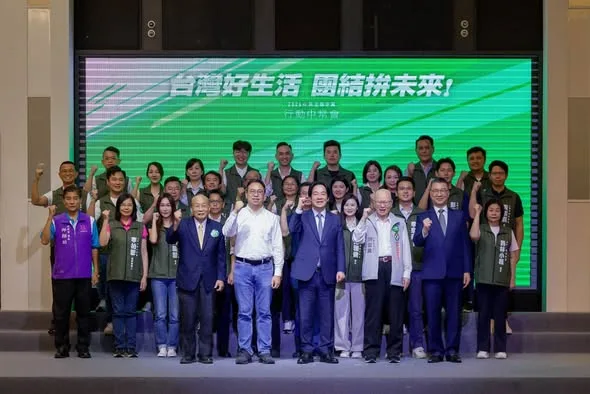
桃園是國門之都，有山有海，有鄉村也有都會，我們是全國工業產值第一的城市，產業鏈完整多元。這裡有引領世界潮流的AI、科技、電腦產業，也有傳統的汽車、機械、食品產業。百工百業在桃園，都有蓬勃發展的機會。 感謝民進黨主席賴清德總統，今天移師桃園舉辦行動中常會，我要向大家報告，我的家鄉桃園擁有獨一無二的優勢，更匯聚了大家對未來的無限期待。升格直轄市以來，我們的人口增加超過30萬。 然而，隨著人口迅速成長，建設的速度，卻明顯跟不上城市發展的腳步。 這段時間，我走遍桃園各區，聽見市民對於改變現狀的渴望，也看見這座城市的各種可能，以及被壓抑的巨大潛能。 我深知，現在的桃園正站在關鍵十字路口。市長作為市政發動機、民意接收站，需要「心在桃園、根在桃園」，唯有真正了解地方需求的人，才能帶領這座城市向前。 從產業升級、交通改善、醫療平權，到青年支持、藝文發展與運動環境，針對桃園此刻的各項不足，我已經準備好全方位的具體解方，要用扎實的政策，驅動這座城市大步向前！ 手上這一票，決定了接下來四年，桃園要向世界訴說什麼樣的故事。 我是在地子弟黃世杰，我受這片土地栽培，我的心在桃園，成家立業也在桃園，桃園是我的家鄉，是我實踐夢想的地方。 我有決心、更有行動力，我們要匯聚最大的力量，把過去三年多的停滯，化作未來三十年的爆發力。讓真正準備好的市長，帶領桃園迎向光榮、走向世界、奔向未來！ 11/28懇請支持黃世杰，支持桃園隊全壘打！ 一起找回令人動心的城市，讓心桃園動起來💖
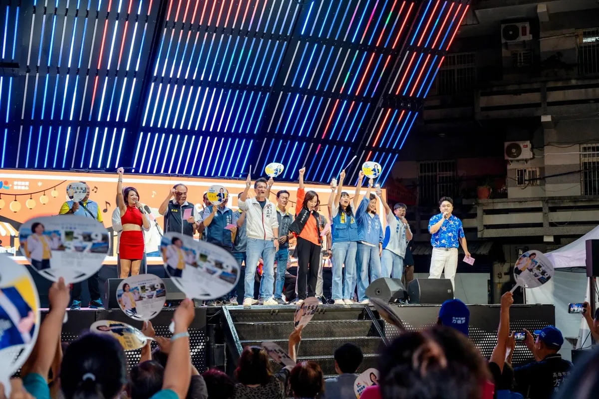
昨天來到梓官大壽宮廟口開講，看到這麼多鄉親到場，也和方信淵、宋立彬、陸淑美三位議員及黃韻涵議員候選人一同討論梓官的未來。 梓官真的很美。許多人來到高雄，第一站常常就是到蚵仔寮吃海產。很多人說高雄最美的是西子灣，但在我眼裡，梓官的海線一樣有自己的魅力，只是這麼美的地方，不能只有一個蚵仔寮，觀光、交通、漁業，都還有很大的發展空間。 而最不能迴避的，就是治水。 上個月到典寶里勘災，看到淹水情況，也聽到鄉親說：「30年來都這樣。」箱涵、排水系統老舊等問題，地方早就知道，真正需要的是政府把資源用在最需要的地方。 高雄要進步，不能只有看得到科技產業，也要讓孩子願意留下來、讓薪水提高、讓環境更好，讓每一個地方都能分享到城市發展的成果。 所以我提出四個方向：薪水漲起來、人要留下來、環境好起來、高雄拚世界。 我希望十年、二十年後，大家回頭看2026年的選擇，會發現梓官真的變得更好，孩子留下來了，長輩生活得更有尊嚴，這片美麗的海線也被更多人看見。 這是我對高雄、也是對梓官最深的期待。 #高雄 #梓官
@su.chiaohui:新莊隊大團結！四席力拚全壘打！ 今天和吳秉叡委員，鍾宏仁議員，以及新莊隊的翁震州、林秉宥、陳岱吟、吳奕萱四位議員及候選人團結在一起，大家也來到 #宏泰市場 掃街，除了展現新莊隊的氣勢，也和鄉親報告我們的成績和對新莊的願景。 未來，我要和新莊隊一起推動「國影中心」升級，打造集結金曲、金馬、金鐘的「三金博物館」；更要串聯新莊廟街、新莊體育館、中港大排及宏匯廣場，整合文化、運動、休閒與商圈，打造「 觀光十字廊帶」，讓更多人走進新莊、認識新莊，帶動人潮與地方發展，也讓新莊人以自己的家鄉為榮！ 我也向大家預告，「北新莊聯合競選總部」即將正式成立，歡迎大家一起來相挺，為新莊隊加油！ 📍北新莊聯合競選總部成立大會 日期：10/9（五）15:00開始入場 地點：新莊體育館前廣場（中華路與公園路口）


台灣的故事，要讓台灣的創作者說得出來，也能靠創作生活下去。 ⠀ 和影視音的朋友交流座談，聽到許多共同的難題：作品完成了，缺少被看見的通路；幕後工作需要設備，卻負擔不起空間；想辦一場演出，得自己奔走好幾個局處。 ⠀ 台北聚集了許多創作者、製作團隊和公協會。市府可以做的事很具體：盤點市有空間，降低小型工作室負擔；從市有場館試辦紀錄片常態放映，讓本土作品走進校園與公共場域；強化影委會的產業窗口，協助跨局處協調與國際合作；也讓歌手、樂手有更多一起演出、穩定工作的機會。 ⠀ 謝謝馮賢賢主持人、周美玲、葉天倫、楊力州、張辰漁，以及柯智豪、朱約信、周震、蕭達謙，從電影、紀錄片、音樂、幕後製作到現場展演，分享第一線的經驗與建議。 ⠀ 我會認真整理大家的意見，思考台北市府如何從空間、通路、行政協調和人才支持著手，讓台北成為創作者留得下來、活得下去、走得出去的城市。 ⠀ #台北順起來 #你的市長沈伯洋

@zenolai:各行各業一起努力，把高雄照顧得更好！ 經貿文教各界夥伴齊聚一堂，從幼教、兒照、補教、家長團體，到美容業與各界社團，大家雖來自不同領域，卻有共同心願，就是讓高雄的下一代過得更好，也讓產業有更好的發展。 謝謝劉秀鳳總會長號召成立後援總會，也謝謝各區會長帶領各行各業夥伴響應。各位都是第一線工作者，最了解家長的需要，也最清楚產業面對的問題。
@schuanglawyer:黃世杰已經準備好了，張善政呢？我不怕直接辯論市政，但張善政究竟是對這四年的表現沒信心，還是害怕被235萬市民檢視？ 昨天，張善政在議會備詢時，說他不會跟我進行辯論。 我在準備登記書件時，毫不猶豫勾選參加政見發表、且願意接受辯論，希望跟張善政能夠有一場公開交流市政的機會。 因為桃園人實在太悶了，這四年找不到市長、看不到建設、不清楚桃園方向。 這段時日以來，無論我對市政提出任何疑問，張善政幾乎都不正面回應，不然就是請局處首長代打。 如果連民主選舉前的市政辯論，張善政都不願意現身，市民要如何檢視我們對市政問題的理解、政策主張，如何知道我們想把桃園帶到哪裡去？ 桃園市民要看的不是準備好的講稿，而是面對問題時，能不能提出具體答案。 這種「只想單向宣布、不願接受市民提問」的態度，也讓人聯想到近期航空城PCB專區引發的地方爭議。重大產業政策牽涉居民生活與地方發展，本來就應該充分說明、充分溝通。市長選舉也一樣，不能只挑準備好的內容，更應該面對問題、直球回答，讓城市治理方案接受公開檢驗。 所以我要問，張善政究竟是對這四年表現沒信心，還是面對市政問題沒有準備好答案，面對235萬市民會害怕？
Opposition Parties Pass "Fiscal Revenue and Expenditure Act," Giving Tainan an Extra $16.3 Billio...